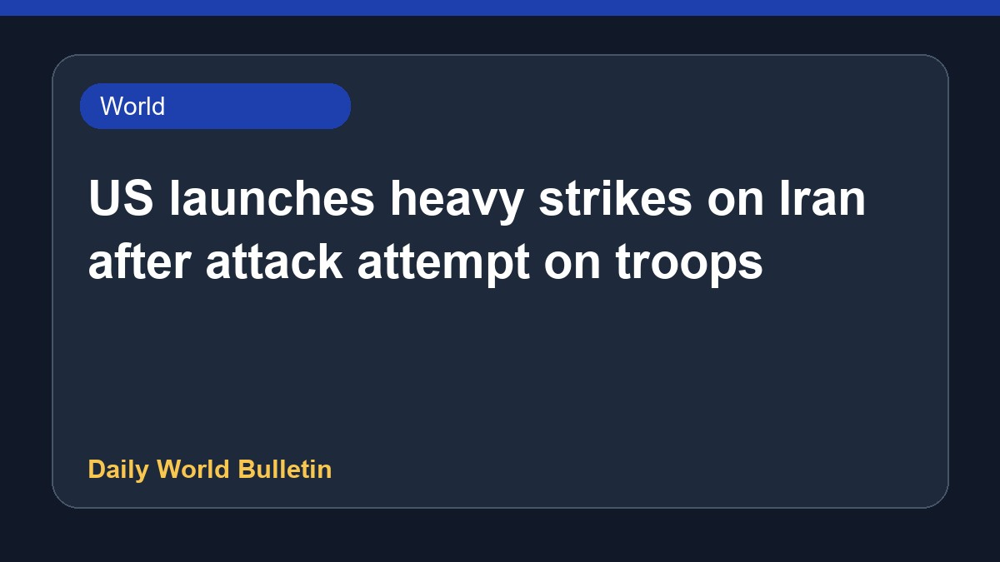

US launches heavy strikes on Iran after attack attempt on troops

The United States has carried out heavy military strikes against targets in Iran following an attempted strike on American forces. This latest escalation comes after a brief lull in conflict during which active hostilities were temporarily halted. According to available reports, both sides have now resumed launching missile strikes at each other, signaling an end to the short period of calm. Further official specifics regarding the exact damage, casualties, or specific locations targeted remain limited at this time. The situation reflects a swift resurgence of direct military confrontation between the two nations.
Original source: BBC World
US launches 'heavy' strikes on Iran after attempted attack on American troops ↗
US launches 'heavy' strikes on Iran after attempted attack on American troops ↗